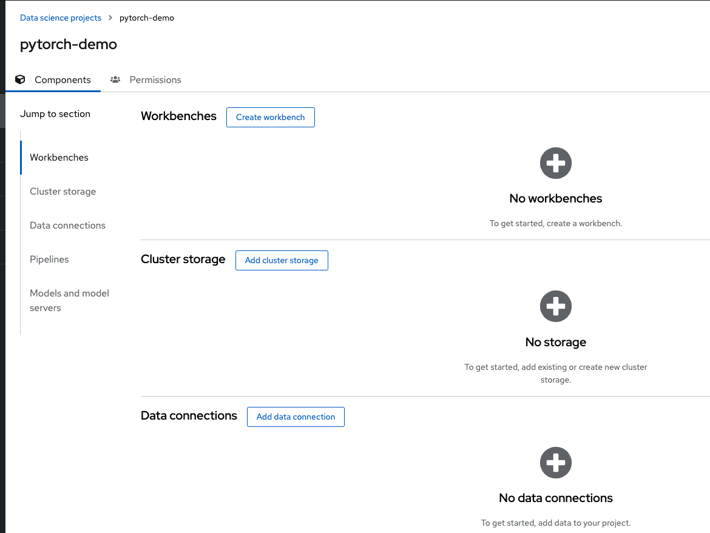
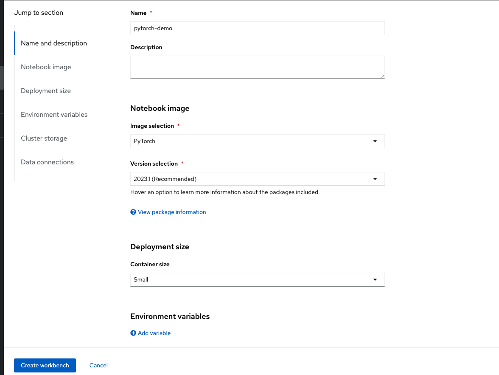
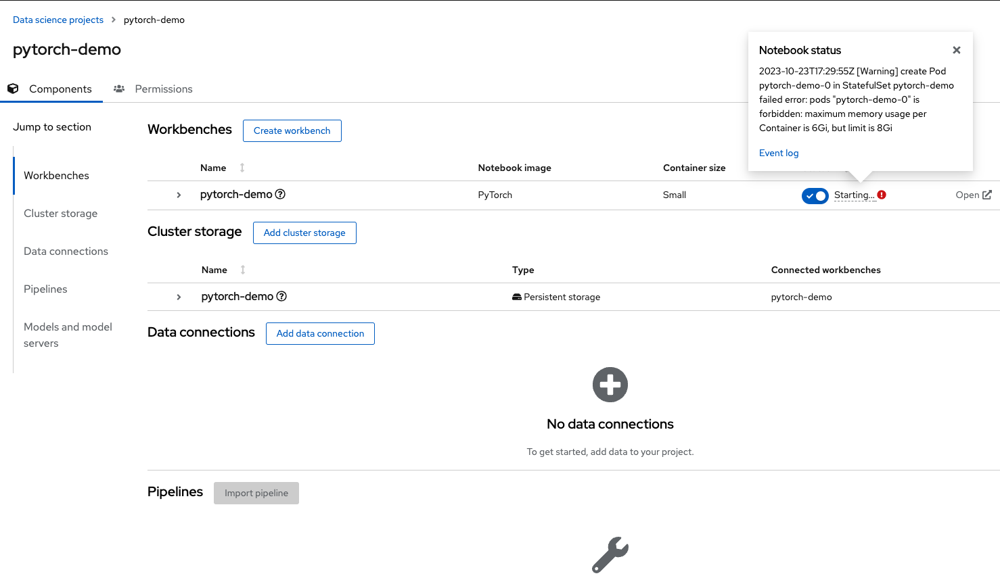
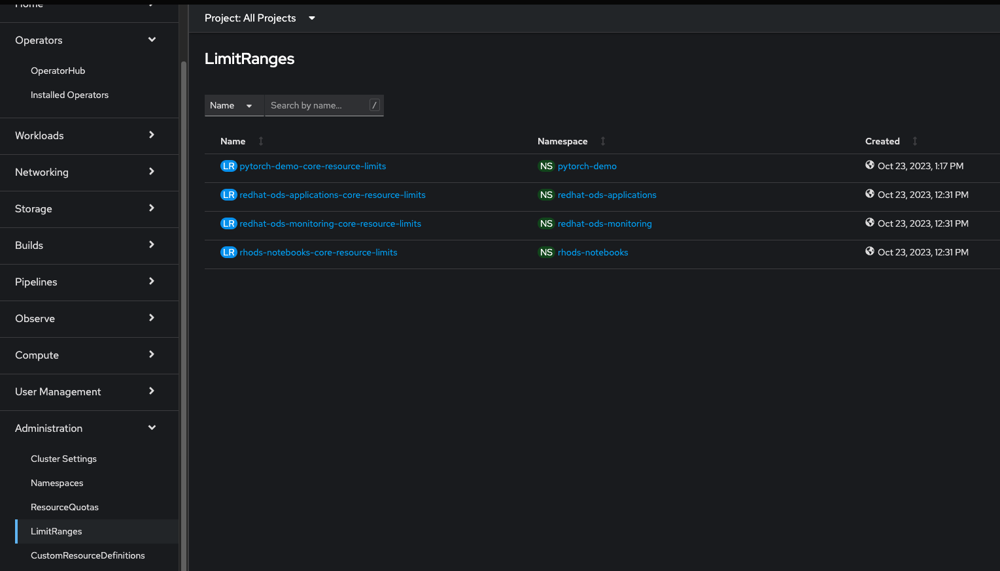
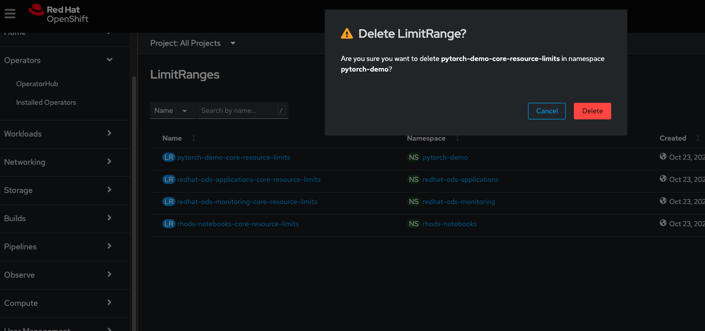
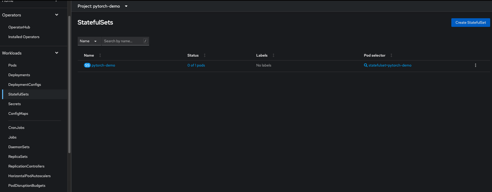
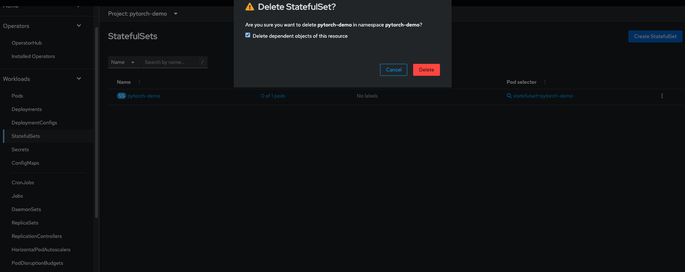
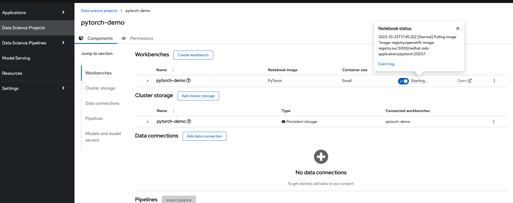
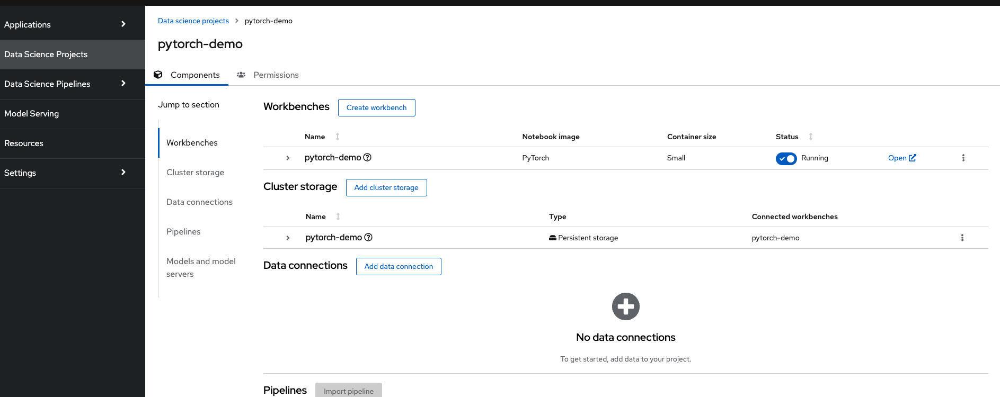

RHODS
This section covers how to set up a Data Science project in RHODS and how to create a new Workbench for us to work on our code
Create a new Workbench to work on

Click on Create workbench. We will select the PyTorch Image for this lab. We can keep the other selections same as the defaults

Resolve pod start error

Go back to the cluster to the Administrator view and the Administration tab

Now delete the Limit Range for the pytorch-demo namespace or for whatever namespace that you have

Now go to the Workloads tab and Click on StatefulSets. Scroll to your project in the Projects dropdown and delete the StatefulSet that is created.


After doing this the pod will start correctly. Now go back to the RHODS UI and we can see that our pod is pulling the image

Wait till the Status goes to Running
